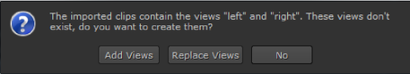
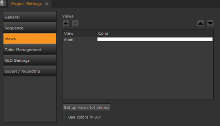
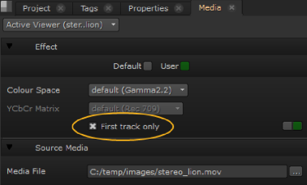

你可以导入你的镜头，让 Nuke 工作室 自动创建视图或提前在项目设置中设置视图。这允许您单独处理单个视图或两个视图一起处理，并查看更改对每个视图的影响。
如果在多个项目中可能需要相同的视图，则可能需要将创建的视图保存在 模板.nk 脚本文件。有关如何执行此操作的更多信息，请参见 模板脚本 .
注意: 多视图未实现自动视图创建 。Mov 文件。请参阅 手动创建和管理视图 有关如何创建视图的信息。
| 1。 | 正常导入多视图文件。请参阅 摄取媒体 欲了解更多信息。 |
的 创建缺少的视图？ 对话框显示。

| 2. | 单击 添加视图 , 替换视图 ,或 没有 : |
• 添加视图 -将传入剪辑中的视图添加到项目中存在的视图中。
• 替换视图 -将所有现有项目视图替换为传入剪辑中的视图。
• 没有 -导入剪辑并仅显示文件中的第一个视图，保留项目中的任何现有视图。
你现在可以获得的意见的项目, 视图 某些下拉菜单 属性 面板控件。您还会注意到，每个视图在查看器控件中都有自己的按钮。
| 1。 | 选择 项目 > 编辑设置 . |
| 2. | 转到 视图 标签。可用的视图列在 视图 面板。 |

| 3. | 如果要删除名为 主要 并添加名为 左 和 右 ,单击 设置立体视图 按钮。这两个视图被指定了颜色。要更改颜色，请双击颜色字段，并从打开的颜色选择器中选择另一种颜色。 |
| 4. | 启用 在 UI 中使用颜色 将每个视图的选定颜色应用于查看器上方的关联按钮。 |
| 5. | 如果要添加其他新视图，请单击 + 按钮。 |
| 6. | 要删除不必要的视图，请从列表中选择该视图，然后单击 - 按钮。 |
| 7. | 要在视图列表中移动视图，请单击 “视图” 面板上方的向上和向下箭头。 |
你现在可以获得的意见的项目, 视图 某些下拉菜单 属性 面板控件。您还会注意到，每个视图在查看器控件中都有自己的按钮。
多视图 。Mov 默认情况下，文件只显示一个视图。启用多视图中的所有视图 。Mov 文件:
| 1。 | 导航到 窗口 > 媒体 和禁用 仅第一轨道 . |

你会注意到
。Mov
在垃圾箱里现在标有
 表示多个视图。
表示多个视图。
| 2. | 现在可以使用时间线查看器上方的按钮在视图之间切换。 |
|
|